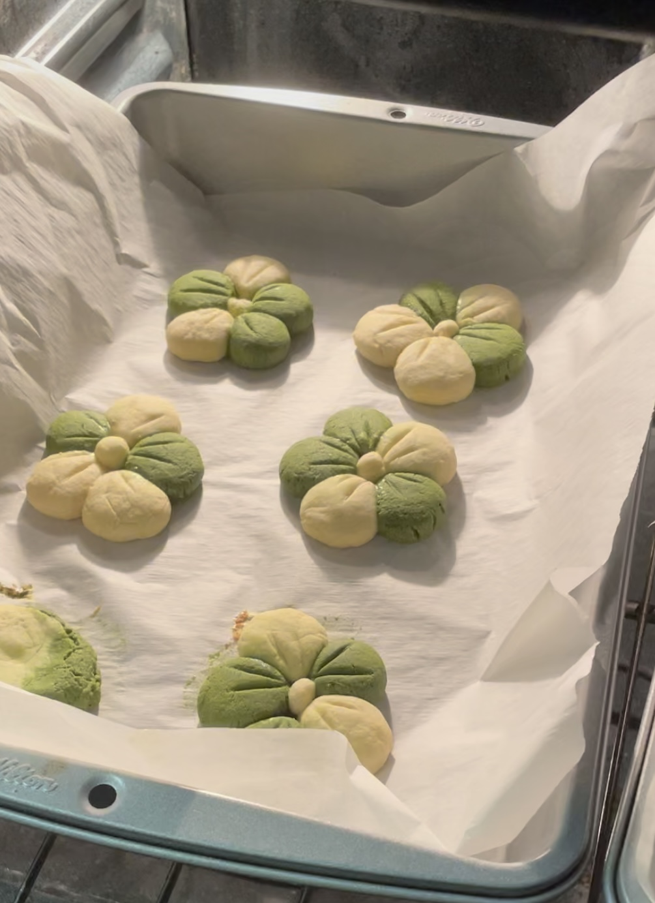
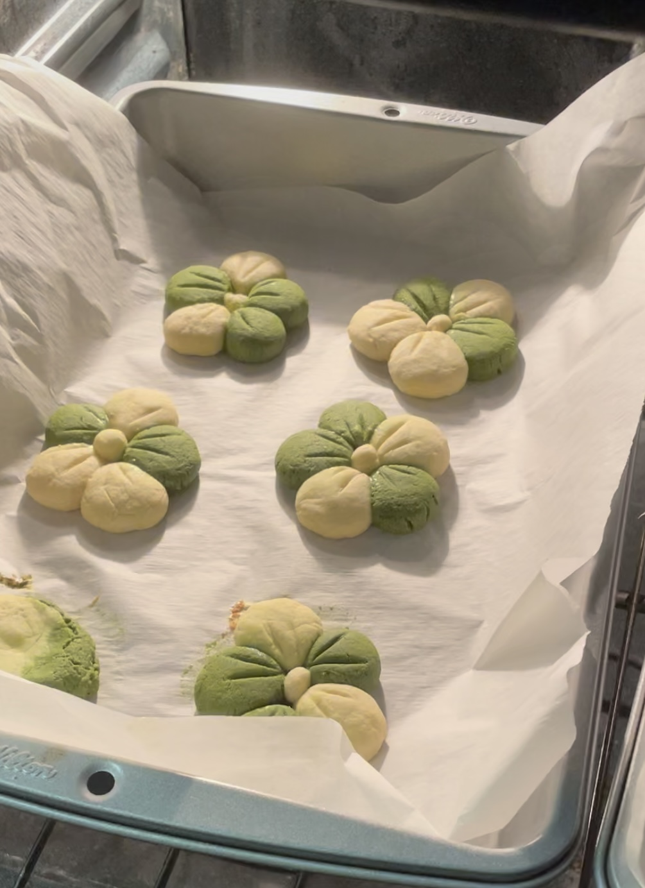

Hi👋 Nice to meet you!
My name is Yiwei*. I am a graduate student at the University of Texas at Austin, studying Information Science with a specialization in Human-Computer Interaction.
Previously, I studied Public Health and Data Science at the University of Washington, Seattle.
Coming from an interdisciplinary background, I have a strong interest in bringing technology into the community to create positive social impacts. Aiming to address critical HCI issues, my research focuses on social computing, specifically on topics related to online community, content moderation, and responsible AI. I am also interested in mHealth and general health informatics topics.
*pronounced as EE-way

 
